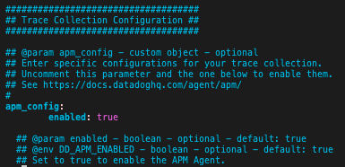
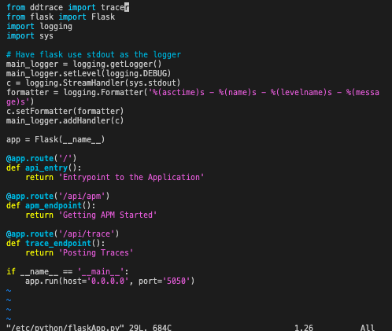
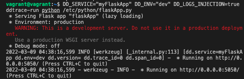
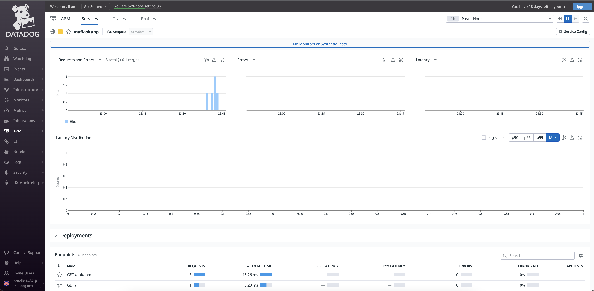
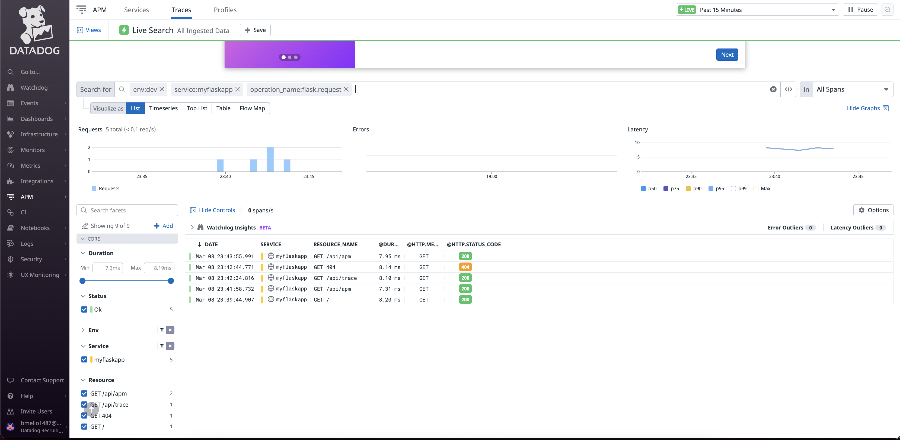
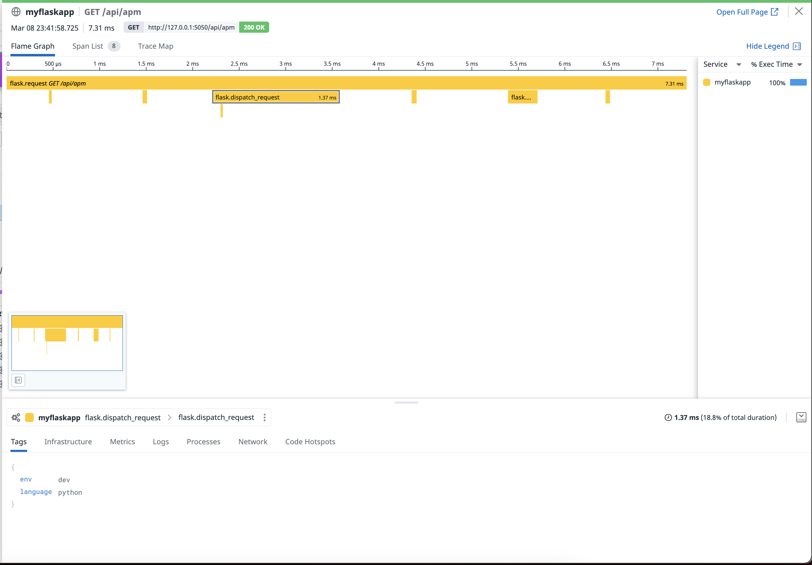
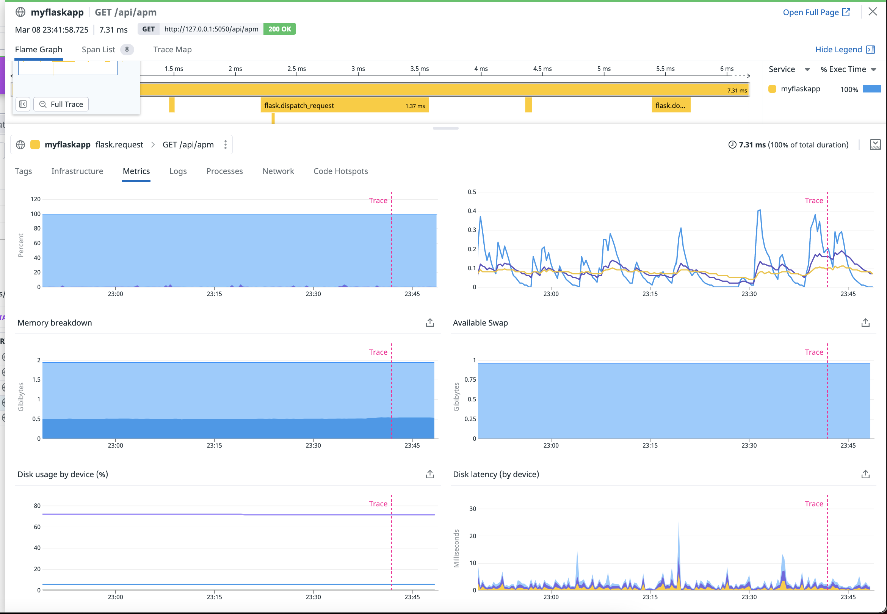
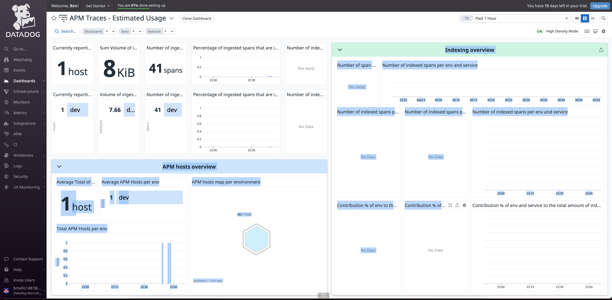
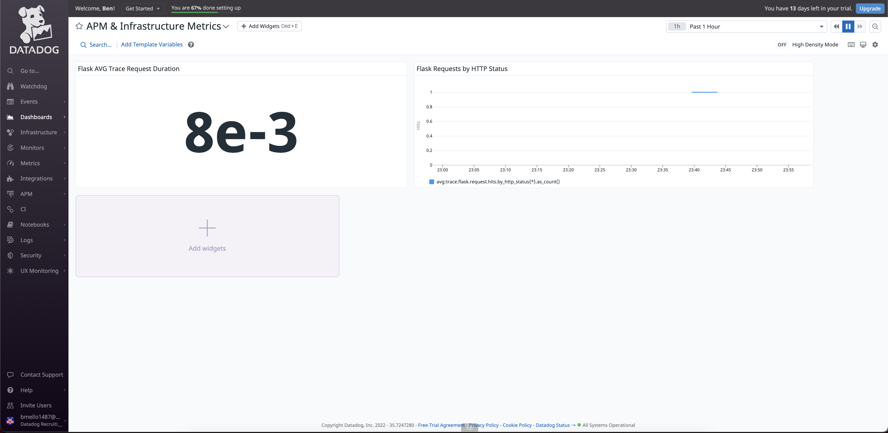

Collecting APM Data¶
Enable APM in the Agent Config file
sudo vim /etc/datadog-agent/datadog.yaml

Install ddtrace
pip install ddtrace
Install Flask
pip install flask
Create Python file that contains the Flask App provided
vagrant@vagrant:~$ sudo vim /etc/python/flaskApp.py

Start the Flask App with the following command:
vagrant@vagrant:~$ DD_SERVICE="myFlaskApp" DD_ENV="dev" DD_LOGS_INJECTION=true ddtrace-run python /etc/python/flaskApp.py
- 
Once we see ddtrace active, run the following curl command to test the endpoints
curl 127.0.0.1:5050
curl 127.0.0.1:5050/api/apm
curl 127.0.0.1:5050/api/trace
curl 127.0.0.1:5050/test
The requests were successfully traced. Each trace represents the time spent by the application processing request. All traces are OK.
- 

By looking deeper into this trace, you can see each span that makes up the request.



APM Data Timeboard

- Bonus: Service vs Resource
Service - A service is a build block in computing architecture. It groups together enpoints, quereies, or jobs to build your application.
Resource - A resource represents a certain area of an application. It could be an instrumented web endpoint, database query,or background job.
Final Question¶
I think an ideal use for Datadog would be for the Bushnell Golf Speaker/Rangefinder. The product is great for an ideal day out on the course as it allows you to play music and also can tell you how far away the green is; even down to the detail of the front,center, and back of the green. This app connects to your smartphone device and has majority of courses preloaded to the app.
Unfortunately, after a handful of uses my smartphone would not connect anymore to the device. With a lot of golfers on the course at once, bluetooth inteference can always be an issue. I ruled that out as I was the only device connected with bluetooth within 100 yards. After reaching out to Bushnell’s tech support they couldn’t see anyting on their end to help troubleshoot and made it seem like my phone was the issue.
With Datadog monitoring, Bushnell would be able have visibilty to see the exact issue as to why the connection may be failing. To keep golfers satisfied, they would be able to reduce downtime and detect issues before they happen. It would be easier to determine what the issue exactly is; whether it’s at the device, application, or network level.